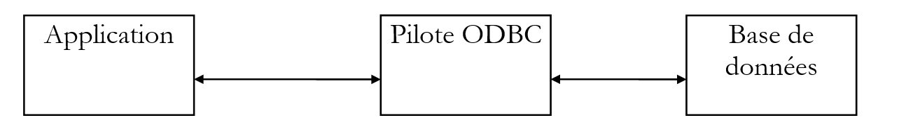
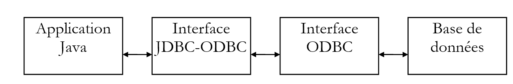
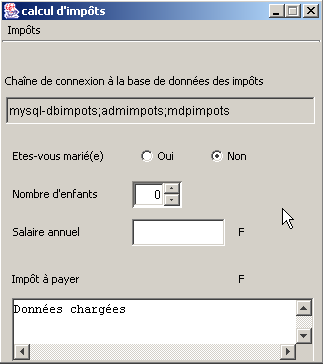
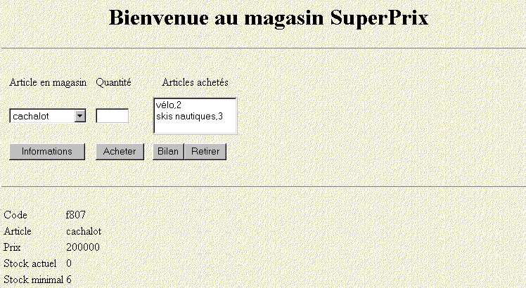
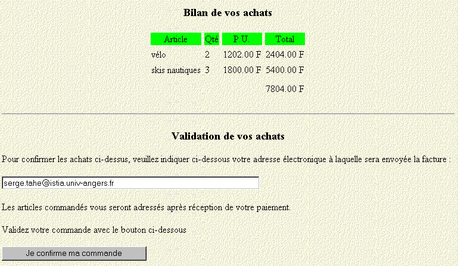
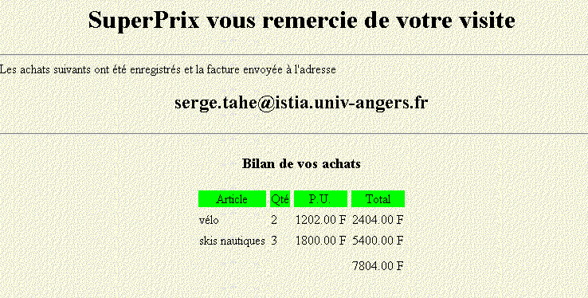

6. Gestion des bases de données avec l’API JDBC
6.1. Généralités
Il existe de nombreuses bases de données sur le marché. Afin d’uniformiser les accès aux bases de données sous MS Windows, Microsoft a développé une interface appelée ODBC (Open DataBase Connectivity). Cette couche cache les particularités de chaque base de données sous une interface standard. Il existe sous MS Windows de nombreux pilotes ODBC facilitant l’accès aux bases de données. Voici par exemple, une liste de pilotes ODBC installés sur une machine Win95 :

Une application s’appuyant sur ces pilotes peut utiliser n’importe quelle bases de données ci-dessus sans ré-écriture.

Afin que les applications Java puissent tirer parti elles-aussi de l’interface ODBC, Sun a créé l’intervace JDBC (Java DataBase Connectivity) qui va s’intercaler entre l’application Java et l’interface ODBC :

6.2. Les étapes importantes dans l’exploitation des bases de données
6.2.1. Introduction
Dans une application JAVA utilisant une base de données avec l’interface JDBC, on trouvera généralement les étapes suivantes :
- Connexion à la base de données
- Émission de requêtes SQL vers la base
- Réception et traitement des résultats de ces requêtes
- Fermeture de la connexion
Les étapes 2 et 3 sont réalisées de façon répétée, la fermeture de connexion n’ayant lieu qu’à la fin de l’exploitation de la base. C’est un schéma relativement classique dont vous avez peut-être l’habitude si vous avez exploité une base de données de façon interactive. Nous allons détailler chacune de ces étapes sur un exemple. Nous considérons une base de données ACCESS appelée ARTICLES et ayant la structure suivante :
nom | type |
code | code de l’article sur 4 caractères |
nom | son nom (chaîne de caractères) |
prix | son prix (réel) |
stock_actu | son stock actuel (entier) |
stock_mini | le stock minimum (entier) en-deça duquel il faut réapprovisionner l’article |
Cette base ACCESS est définie comme source de données « utilisateur » dans le gestionnaire des bases ODBC :


Ses caractéristiques sont précisées à l’aide du bouton Configurer comme suit :

Cette configuration consiste essentiellement à associer à la base ARTICLES, le fichier Access articles.mdb correspondant à cette base. Ceci fait, la base ARTICLES est accessible aux applications utilisant l’interface ODBC.
6.2.2. L’étape de connexion
Pour exploiter une base de données, une application Java doit d’abord opérer une phase de connexion. Celle-ci se fait avec la méthode de classe suivante :
avec
DriverManager : classe Java détenant la liste des pilotes disponibles pour l’application
Connection : classe Java établissant un lien entre l’application et la base grâce auquel l’application va transmettre des requêtes SQL à la base et recevoir des résultats
URL : nom identifiant la base de données. Ce nom est analogue aux URL de l’Internet. C’est pourquoi il fait partie de la classe URL. Cependant l’Internet n’intervient aucunement ici. L’URL a la forme suivante :
**jdbc:nom\_du\_pilote:nom\_de\_la\_source;param=val1;param2=val2**
Dans nos exemples où l’on utilisera exclusivement des pilotes ODBC, le pilote s’appelle **odbc**. La troisième partie de l’URL est constituée du nom de la source avec d’éventuels paramètres. Dans nos exemples, il s’agira de sources ODBC connues du système. Ainsi l’URL de la source de données *Articles* définie précédemment sera
**jdbc:odbc:Articles**
id : Identité de l’utilisateur (login)
mdp : mot de passe de l’utilisateur (password)
Pour résumer, le programme se connecte à une base de données :
- identifiée par un nom (URL)
- sous l’identité d’un utilisateur (id, mdp)
Si ces trois paramètres sont corrects, et si le pilote capable d’assurer la connexion de l’application Java à la base de données précisée existe, alors une connexion est réalisée entre l’application Java et la base de données. Celle-ci est matérialisée pour le programme par l’objet de type Connection rendu par la classe DriverManager. Comme cette connexion peut échouer pour diverses raisons, elle est susceptible de lancer une exception. On écrira donc :
Connection connexion=null;
URL base=...;
String id=...;
String mdp=...;
try{
connexion=DriverManager.getConnection(base,id,mdp);
} catch (Exception e){
// traiter l’exception
}
Pour que la connexion à une base de données soit possible, il faut disposer du pilote adéquat. Dans nos exemples, il s’agira du pilote ODBC capable de gérer la base de données demandée. S’il faut que ce pilote soit disponible dans la liste des pilotes ODBC présents sur la machine, il faut également disposer de la classe JAVA qui fera l’interface avec lui. Pour ce faire, l’application va requérir la classe qui lui est nécessaire de la façon suivante :
La classe Class n’est en rien liée à l’interface JDBC. C’est une classe générale de gestion des classes. Sa méthode statique forName permet de charger dynamiquement une classe et donc de bénéficier de ses attributs et méthodes statiques. La classe faisant l’interface avec les pilotes ODBC de MS Windows s’appelle « sun.jdbc.odbc.JdbcOdbcDriver ». On écrira donc (la méthode peut générer une exception) :
try{
Class.forName(« sun.jdbc.odbc.JdbcOdbcDriver ») ;
} catch (Exception e){
// traiter l’exception (classe inexistante)
}
Les classes nécessaires à l’interface JDBC se trouvent dans le package java.sql. On écrira donc en début de programme :
Voici un programme permettant la connexion à une base de données :
import java.sql.*;
import java.io.*;
// appel : pg PILOTE URL UID MDP
// se connecte à la base URL grâce à la classe JDBC PILOTE
// l'utilisateur UID est identifié par un mot de passe MDP
public class connexion1{
static String syntaxe="pg PILOTE URL UID MDP";
public static void main(String arg[]){
// vérification du nb d'arguments
if(arg.length<2 || arg.length>4)
erreur(syntaxe,1);
// connexion à la base
Connection connect=null;
String uid="";
String mdp="";
if(arg.length>=3) uid=arg[2];
if(arg.length==4) mdp=arg[3];
try{
Class.forName(arg[0]);
connect=DriverManager.getConnection(arg[1],uid,mdp);
System.out.println("Connexion avec la base " + arg[1] + " établie");
} catch (Exception e){
erreur("Erreur " + e,2);
}
// fermeture de la base
try{
connect.close();
System.out.println("Base " + arg[1] + " fermée");
} catch (Exception e){}
}// main
public static void erreur(String msg, int exitCode){
System.err.println(msg);
System.exit(exitCode);
}
}// classe
Voici un exemple d’exécution :
E:\data\java\jdbc\0>java connexion1 sun.jdbc.odbc.JdbcOdbcDriver jdbc:odbc:articles
Connexion avec la base jdbc:odbc:articles établie
Base jdbc:odbc:articles fermée
6.2.3. Émission de requêtes vers la base de données
L’interface JDBC permet l’émission de requêtes SQL vers la base de données connectée à l’application Java ainsi que le traitement des résultats de ces requêtes. Le langage SQL (Structured Query Language) est un langage de requêtes standardisé pour les bases de données relationnelles. On y distingue plusieurs types de requêtes :
- les requêtes d’interrogation de la base (SELECT)
- les requêtes de mise à jour de la base (INSERT, DELETE, UPDATE)
- les requêtes de création/destruction de tables (CREATE, DELETE)
On suppose ici que le lecteur connaît les bases du langage SQL.
6.2.3.1. La classe Statement
Pour émettre une requête SQL, quelle qu’elle soit, vers une base de données, l’application Java doit disposer d’un objet de type Statement. Cet objet stockera, entre autres choses, le texte de la requête. Cet objet est nécessairement lié à la connexion en cours. C’est donc une méthode de la connexion établie qui permet de créer les objets Statement nécessaires à l’émission des requêtes SQL. Si connexion est l’objet symbolisant la connexion avec la base de données, un objet Statement est obtenu de la façon suivante :
Une fois obtenu un objet Statement, on peut émettre des requêtes SQL. Cela se fera différemment selon que la requête est une requête d’interrogation ou de mise à jour de la base.
6.2.3.2. Émettre une requête d’interrogation de la base
Une requête d’interrogation est classiquement une requête du type :
Seuls les mots clés de la première ligne sont obligatoires, les autres sont facultatifs. Il existe d’autres mots clés non présentés ici.
- Une jointure est faite avec toutes les tables qui sont derrière le mot clé from
- Seules les colonnes qui sont derrière le mot clé select sont conservées
- Seules les lignes vérifiant la condition du mot clé where sont conservées
- Les lignes résultantes ordonnées selon l’expression du mot clé order by forment le résultat de la requête.
Le résultat d’un select est une table. Si on considère la table ARTICLES précédente et qu’on veuille les noms des articles dont le stock actuel est au-dessous du seuil minimal, on écrira : select nom from articles where stock_actu<stock_mini. Si on les veut par ordre alphabétique des noms, on écrira : select nom from articles where stock_actu<stock_mini order by nom
Pour exécuter ce type de requête, la classe Statement offre la méthode executeQuery :
où requête est le texte de la requête SELECT à émettre.
Ainsi, si
- connexion est l’objet symbolisant la connexion avec la base de données
- Statement s=connexion.createStatement() crée l’objet Statement nécessaire pour l’émission des requêtes SQL
- ResultSet rs=s.executeQuery(« select nom from articles where stock_actu<stock_mini ») exécute une requête select et affecte les lignes résultats de la requête à un objet de type ResultSet.
6.2.3.3. La classe ResultSet : résultat d’une requête select
Un objet de type ResultSet représente une table, c’est à dire un ensemble de lignes et de colonnes. A un moment donné, on n’a accès qu’à une ligne de la table appelée ligne courante. Lors de la création initiale du ResultSet, la ligne courante est la ligne n° 1 si le ResultSet n’est pas vide. Pour passer à la ligne suivante, la classe ResultSet dispose de la méthode next :
Cette méthode tente de passer à la ligne suivante du ResultSet et rend true si elle réussit, false sinon. En cas de réussite, la ligne suivante devient la nouvelle ligne courante. La ligne précédente est perdue et on ne pourra revenir en arrière pour la récupérer. La table du ResultSet a des colonnes col1, col2,.... Pour exploiter les différents champs de la ligne courante, on dispose des méthodes suivantes :
pour obtenir le champ « coli » de la ligne courante. Type désigne le type du champ coli. On utilise assez souvent la méthode getString sur tous les champs, ce qui permet d’obtenir le contenu du champ en tant que chaîne de caractères. On convertit ensuite si nécessaire. Si on ne connaît pas le nom de la colonne, on peut utiliser les méthodes
où i est l’indice de la colonne désirée (i>=1).
6.2.3.4. Un premier exemple
Voici un programme qui affiche le contenu de la base ARTICLES créée précédemment :
import java.sql.*;
import java.io.*;
// affiche le contenu d'une base système ARTICLES
public class articles1{
static final String DB="ARTICLES"; // base de données à exploiter
public static void main(String arg[]){
Connection connect=null; // connexion avec la base
Statement S=null; // objet d'émission des requêtes
ResultSet RS=null; // table résultat d'une requête
try{
// connexion à la base
Class.forName("sun.jdbc.odbc.JdbcOdbcDriver");
connect=DriverManager.getConnection("jdbc:odbc:"+DB,"","");
System.out.println("Connexion avec la base " + DB + " établie");
// création d'un objet Statement
S=connect.createStatement();
// exécution d'une requête select
RS=S.executeQuery("select * from " + DB);
// exploitation de la table des résultats
while(RS.next()){ // tant qu'il y a une ligne à exploiter
// on l'affiche à l'écran
System.out.println(RS.getString("code")+","+
RS.getString("nom")+","+
RS.getString("prix")+","+
RS.getString("stock_actu")+","+
RS.getString("stock_mini"));
}// ligne suivante
} catch (Exception e){
erreur("Erreur " + e,2);
}
// fermeture de la base
try{
connect.close();
System.out.println("Base " + DB + " fermée");
} catch (Exception e){}
}// main
public static void erreur(String msg, int exitCode){
System.err.println(msg);
System.exit(exitCode);
}
}// classe
Les résultats obtenus sont les suivants :
Connexion avec la base ARTICLES établie
a300,vélo,1202,30,2
d600,arc,5000,10,2
d800,canoé,1502,12,6
x123,fusil,3000,10,2
s345,skis nautiques,1800,3,2
f450,essai3,3,3,3
f807,cachalot,200000,0,0
z400,léopard,500000,1,1
g457,panthère,800000,1,1
Base ARTICLES fermée
6.2.3.5. La classe ResultSetMetadata
Dans l’exemple précédent, on connaît le nom des colonnes du ResultSet. Si on ne les connaît pas, on ne peut utiliser la méthode getType(nom_colonne). On utilisera plutôt getType(n° colonne). Cependant, pour obtenir toutes les colonnes, il nous faudrait savoir combien de colonnes a le ResultSet obtenu. La classe ResultSet ne nous donne pas cette information. C’est la classe ResultSetMetaData qui nous la donne. Plus généralement, cette classe nous donne des informations sur la structure de la table, c’est à dire sur la nature de ses colonnes.
On a accès aux informations sur la structure d ’un ResultSet en instanciant tout d’abord un objet ResultSetMetaData. Si RS est un ResultSet, le ResultSetMetaData associé est obtenu par :
On notera deux méthodes utiles dans la classe ResultSetMetaData :
- int getColumnCount() qui donne le nombre de colonnes du ResultSet
- String getColumnLabel(int i) qui donne le nom de la colonne i du ResultSet (i>=1)
6.2.3.6. Un deuxième exemple
Le programme précédent affichait le contenu de la base ARTICLES. On écrit ici, un programme qui exécute sur la base ARTICLES toute requête SQL Select que l’utilisateur tape au clavier.
import java.sql.*;
import java.io.*;
// affiche le contenu d'une base système ARTICLES
public class sql1{
static final String DB="ARTICLES"; // base de données à exploiter
public static void main(String arg[]){
Connection connect=null; // connexion avec la base
Statement S=null; // objet d'émission des requêtes
ResultSet RS=null; // table résultat d'une requête
String select; // texte de la requête SQL select
int nbColonnes; // nb de colonnes du ResultSet
// création d'un flux d'entrée clavier
BufferedReader in=null;
try{
in=new BufferedReader(new InputStreamReader(System.in));
} catch(Exception e){
erreur("erreur lors de l'ouverture du flux clavier ("+e+")",3);
}
try{
// connexion à la base
Class.forName("sun.jdbc.odbc.JdbcOdbcDriver");
connect=DriverManager.getConnection("jdbc:odbc:"+DB,"","");
System.out.println("Connexion avec la base " + DB + " établie");
// création d'un objet Statement
S=connect.createStatement();
// boucle d'exécution des requêtes SQL tapées au clavier
System.out.print("Requête : ");
select=in.readLine();
while(!select.equals("fin")){
// exécution de la requête
RS=S.executeQuery(select);
// nombre de colonnes
nbColonnes=RS.getMetaData().getColumnCount();
// exploitation de la table des résultats
System.out.println("Résultats obtenus\n\n");
while(RS.next()){ // tant qu'il y a une ligne à exploiter
// on l'affiche à l'écran
for(int i=1;i<nbColonnes;i++)
System.out.print(RS.getString(i)+",");
System.out.println(RS.getString(nbColonnes));
}// ligne suivante
// requête suivante
System.out.print("Requête : ");
select=in.readLine();
}// while
} catch (Exception e){
erreur("Erreur " + e,2);
}
// fermeture de la base et du flux d'entrée
try{
connect.close();
System.out.println("Base " + DB + " fermée");
in.close();
} catch (Exception e){}
}// main
public static void erreur(String msg, int exitCode){
System.err.println(msg);
System.exit(exitCode);
}
}// classe
Voici quelques résultats obtenus :
Connexion avec la base ARTICLES établie
Requête : select * from articles order by prix desc
Résultats obtenus
g457,panthère,800000,1,1
z400,léopard,500000,1,1
f807,cachalot,200000,0,0
d600,arc,5000,10,2
x123,fusil,3000,10,2
s345,skis nautiques,1800,3,2
d800,canoé,1502,12,6
a300,vélo,1202,30,2
f450,essai3,3,3,3
Requête : select nom, prix from articles where prix >10000 order by prix desc
Résultats obtenus
panthère,800000
léopard,500000
cachalot,200000
6.2.3.7. Émettre une requête de mise à jour de la base de données
Un objet de type Statement permet de stocker les requêtes SQL. La méthode que cet objet utilise pour émettre des requêtes SQL de mise à jour (INSERT, UPDATE, DELETE) n’est plus la méthode executeQuery étudiée précédemment mais la méthode executeUpdate :
La différence est dans le résultat : alors que executeQuery renvoyait la table des résultats (ResultSet), executeUpdate renvoie le nombre de lignes affectées par l’opération de mise à jour.
6.2.3.8. Un troisième exemple
Nous reprenons le programme précédent que nous modifions légèrement : les requêtes tapées au clavier sont maintenant des requêtes de mise à jour de la base ARTICLES.
import java.sql.*;
import java.io.*;
// affiche le contenu d'une base système ARTICLES
public class sql2{
static final String DB="ARTICLES"; // base de données à exploiter
public static void main(String arg[]){
Connection connect=null; // connexion avec la base
Statement S=null; // objet d'émission des requêtes
ResultSet RS=null; // table résultat d'une requête
String sqlUpdate; // texte de la requête SQL de mise à jour
int nbLignes; // nb de lignes affectées par une mise à jour
// création d'un flux d'entrée clavier
BufferedReader in=null;
try{
in=new BufferedReader(new InputStreamReader(System.in));
} catch(Exception e){
erreur("erreur lors de l'ouverture du flux clavier ("+e+")",3);
}
try{
// connexion à la base
Class.forName("sun.jdbc.odbc.JdbcOdbcDriver");
connect=DriverManager.getConnection("jdbc:odbc:"+DB,"","");
System.out.println("Connexion avec la base " + DB + " établie");
// création d'un objet Statement
S=connect.createStatement();
// boucle d'exécution des requêtes SQL tapées au clavier
System.out.print("Requête : ");
sqlUpdate=in.readLine();
while(!sqlUpdate.equals("fin")){
// exécution de la requête
nbLignes=S.executeUpdate(sqlUpdate);
// suivi
System.out.println(nbLignes + " ligne(s) ont été mises à jour");
// requête suivante
System.out.print("Requête : ");
sqlUpdate=in.readLine();
}// while
} catch (Exception e){
erreur("Erreur " + e,2);
}
// fermeture de la base et du flux d'entrée
try{
// on libère les ressources liées à la base
RS.close();
S.close();
connect.close();
System.out.println("Base " + DB + " fermée");
// fermeture flux clavier
in.close();
} catch (Exception e){}
}// main
public static void erreur(String msg, int exitCode){
System.err.println(msg);
System.exit(exitCode);
}
}// classe
Voici le résultat de diverses exécutions des programmes sql1 et sql2 :
Liste des lignes de la base ARTICLES :
E:\data\java\jdbc\0>java sql1
Connexion avec la base ARTICLES établie
Requête : select nom,stock_actu from articles
Résultats obtenus
vélo,30
arc,10
canoé,12
fusil,10
skis nautiques,3
essai3,3
cachalot,0
léopard,1
panthère,1
On modifie certaines lignes :
E:\data\java\jdbc\0>java sql2
Connexion avec la base ARTICLES établie
Requête : update articles set stock_actu=stock_actu+1 where stock_actu>10
2 ligne(s) ont été mises à jour
Vérification :
E:\data\java\jdbc\0>java sql1
Connexion avec la base ARTICLES établie
Requête : select nom,stock_actu from articles
Résultats obtenus
vélo,31
arc,10
canoé,13
fusil,10
skis nautiques,3
essai3,3
cachalot,0
léopard,1
panthère,1
On ajoute une ligne :
E:\data\java\jdbc\0>java sql2
Connexion avec la base ARTICLES établie
Requête : insert into articles (code,nom,prix,stock_actu,stock_mini) values ('x400','nouveau',200,20,10)
1 ligne(s) ont été mises à jour
Vérification :
E:\data\java\jdbc\0>java sql1
Connexion avec la base ARTICLES établie
Requ_te : select nom,stock_actu from articles
Résultats obtenus
vélo,31
arc,10
canoé,13
fusil,10
skis nautiques,3
essai3,3
cachalot,0
léopard,1
panthère,1
nouveau,20
On détruit une ligne :
E:\data\java\jdbc\0>java sql2
Connexion avec la base ARTICLES établie
Requête : delete from articles where code='x400'
1 ligne(s) ont été mises à jour
Requête : fin
Vérification :
E:\data\java\jdbc\0>java sql1
Connexion avec la base ARTICLES établie
Requête : select nom,stock_actu from articles
Résultats obtenus
vélo,31
arc,10
cano_,13
fusil,10
skis nautiques,3
essai3,3
cachalot,0
léopard,1
panthère,1
6.2.3.9. Émettre une requête SQL quelconque
L’objet Statement nécessaire à l’émission de requêtes SQL dispose d’une méthode execute capable d’exécuter tout type de requête SQL :
Le résultat rendu est le booléen true si la requête a rendu un ResultSet (executeQuery), false si elle a rendu un nombre (executeUpdate). Le ResultSet obtenu peut être récupéré avec la méthode getResultSet et le nombre de lignes mises à jour, par la méthode getUpdateCount. Ainsi on écrira :
Statement S=...;
ResultSet RS=...;
int nbLignes;
String requête=...;
// exécution d’une requête SQL
if (S.execute(requête)){
// on a un resultset
RS=S.getResultSet();
// exploitation du ResultSet
...
} else {
// c’était une requête de mise à jour
nbLignes=S.getUpdateCount();
...
}
6.2.3.10. Quatrième exemple
On reprend l’esprit des programmes sql1 et sql2 dans un programme sql3 capable maintenant d’exécuter toute requête SQL tapée au clavier. Pour rendre le programme plus général, les caractéristiques de la base à exploiter sont passées en paramètres au programme.
import java.sql.*;
import java.io.*;
// appel : pg PILOTE URL UID MDP
// se connecte à la base URL grâce à la classe JDBC PILOTE
// l'utilisateur UID est identifié par un mot de passe MDP
public class sql3{
static String syntaxe="pg PILOTE URL UID MDP";
public static void main(String arg[]){
// vérification du nb d'arguments
if(arg.length<2 || arg.length>4)
erreur(syntaxe,1);
// init paramètres de la connexion
Connection connect=null;
String uid="";
String mdp="";
if(arg.length>=3) uid=arg[2];
if(arg.length==4) mdp=arg[3];
// autres données
Statement S=null; // objet d'émission des requêtes
ResultSet RS=null; // table résultat d'une requête d'interrogation
String sqlText; // texte de la requête SQL à exécuter
int nbLignes; // nb de lignes affectées par une mise à jour
int nbColonnes; // nb de colonnes d'un ResultSet
// création d'un flux d'entrée clavier
BufferedReader in=null;
try{
in=new BufferedReader(new InputStreamReader(System.in));
} catch(Exception e){
erreur("erreur lors de l'ouverture du flux clavier ("+e+")",3);
}
try{
// connexion à la base
Class.forName(arg[0]);
connect=DriverManager.getConnection(arg[1],uid,mdp);
System.out.println("Connexion avec la base " + arg[1] + " établie");
// création d'un objet Statement
S=connect.createStatement();
// boucle d'exécution des requêtes SQL tapées au clavier
System.out.print("Requête : ");
sqlText=in.readLine();
while(!sqlText.equals("fin")){
// exécution de la requête
try{
if(S.execute(sqlText)){
// on a obtenu un ResultSet - on l'exploite
RS=S.getResultSet();
// nombre de colonnes
nbColonnes=RS.getMetaData().getColumnCount();
// exploitation de la table des résultats
System.out.println("\nRésultats obtenus\n-----------------\n");
while(RS.next()){ // tant qu'il y a une ligne à exploiter
// on l'affiche à l'écran
for(int i=1;i<nbColonnes;i++)
System.out.print(RS.getString(i)+",");
System.out.println(RS.getString(nbColonnes));
}// ligne suivante du ResultSet
} else {
// c'était une requête de mise à jour
nbLignes=S.getUpdateCount();
// suivi
System.out.println(nbLignes + " ligne(s) ont été mises à jour");
}//if
} catch (Exception e){
System.out.println("Erreur " +e);
}
// requête suivante
System.out.print("\nNouvelle Requête : ");
sqlText=in.readLine();
}// while
} catch (Exception e){
erreur("Erreur " + e,2);
}
// fermeture de la base et du flux d'entrée
try{
// on libère les ressources liées à la base
RS.close();
S.close();
connect.close();
System.out.println("Base " + arg[1] + " fermée");
// fermeture flux clavier
in.close();
} catch (Exception e){}
}// main
public static void erreur(String msg, int exitCode){
System.err.println(msg);
System.exit(exitCode);
}
}// classe
On établit le fichier de requêtes suivant :
select * from articles
update articles set stock_mini=stock_mini+5 where stock_mini<5
select nom,stock_mini from articles
insert into articles (code,nom,prix,stock_actu,stock_mini) values ('x400','nouveau',100,20,10)
select * from articles
delete from articles where code='x400'
select * from articles
fin
Le programme est lancé de la façon suivante :
Le programme prend donc ses entrées dans le fichier requetes et met ses sorties dans le fichier results. Les résultats obtenus sont les suivants :
Connexion avec la base jdbc:odbc:articles établie
Requête : (requete 1 du fichier des requetes : select * from articles)
Résultats obtenus
-----------------
a300,vélo,1202,31,3
d600,arc,5000,10,3
d800,canoé,1502,13,7
x123,fusil,3000,10,3
s345,skis nautiques,1800,3,3
f450,essai3,3,3,4
f807,cachalot,200000,0,1
z400,léopard,500000,1,2
g457,panthère,800000,1,2
Nouvelle Requête : (requete 2 du fichier des requetes : update articles set stock_mini=stock_mini+5 where stock_mini<5)
8 ligne(s) ont été mises à jour
Nouvelle Requête : (requete 3 du fichier des requetes : select nom,stock_mini from articles)
Résultats obtenus
-----------------
vélo,8
arc,8
canoé,7
fusil,8
skis nautiques,8
essai3,9
cachalot,6
léopard,7
panthère,7
Nouvelle Requête : (requete 4 du fichier des requetes : insert into articles (code,nom,prix,stock_actu,stock_mini) values ('x400','nouveau',100,20,10))
1 ligne(s) ont été mises à jour
Nouvelle Requête : (requete 5 du fichier des requetes : select * from articles)
Résultats obtenus
-----------------
a300,vélo,1202,31,8
d600,arc,5000,10,8
d800,canoé,1502,13,7
x123,fusil,3000,10,8
s345,skis nautiques,1800,3,8
f450,essai3,3,3,9
f807,cachalot,200000,0,6
z400,léopard,500000,1,7
g457,panthère,800000,1,7
x400,nouveau,100,20,10
Nouvelle Requête : (requete 6 du fichier des requêtes : delete from articles where code='x400')
1 ligne(s) ont été mises à jour
Nouvelle Requête : (requete 7 du fichier des requêtes : select * from articles)
Résultats obtenus
-----------------
a300,vélo,1202,31,8
d600,arc,5000,10,8
d800,canoé,1502,13,7
x123,fusil,3000,10,8
s345,skis nautiques,1800,3,8
f450,essai3,3,3,9
f807,cachalot,200000,0,6
z400,léopard,500000,1,7
g457,panthère,800000,1,7
6.3. IMPOTS avec une base de données
La dernière fois que nous avons traité le problème de calcul d'impôts, c'était avec une interface graphique et les données étaient stockées dans un fichier. Nous reprenons cette version en supposant maintenant que les données sont dans une base de données ODBC-MySQL. MySQL est un SGBD du domaine public utilisable sur différentes plate-formes dont Windows et Linux. Avec ce SGBD, une base de données dbimpots a été créée avec dedans une unique table appelée impots. L'accès à la base est contrôlé par un login/motdepasse ici admimpots/mdpimpots. La copie d'écran montre comment utiliser la base dbimpots avec MySQL :
C:\Program Files\EasyPHP\mysql\bin>mysql -u admimpots -p
Enter password: *********
Welcome to the MySQL monitor. Commands end with ; or \g.
Your MySQL connection id is 18 to server version: 3.23.49-max-nt
Type 'help;' or '\h' for help. Type '\c' to clear the buffer.
mysql> use dbimpots;
Database changed
mysql> show tables;
+--------------------+
| Tables_in_dbimpots |
+--------------------+
| impots |
+--------------------+
1 row in set (0.00 sec)
mysql> describe impots;
+---------+--------+------+-----+---------+-------+
| Field | Type | Null | Key | Default | Extra |
+---------+--------+------+-----+---------+-------+
| limites | double | YES | | NULL | |
| coeffR | double | YES | | NULL | |
| coeffN | double | YES | | NULL | |
+---------+--------+------+-----+---------+-------+
3 rows in set (0.02 sec)
mysql> select * from impots;
+---------+--------+---------+
| limites | coeffR | coeffN |
+---------+--------+---------+
| 12620 | 0 | 0 |
| 13190 | 0.05 | 631 |
| 15640 | 0.1 | 1290.5 |
| 24740 | 0.15 | 2072.5 |
| 31810 | 0.2 | 3309.5 |
| 39970 | 0.25 | 4900 |
| 48360 | 0.3 | 6898 |
| 55790 | 0.35 | 9316.5 |
| 92970 | 0.4 | 12106 |
| 127860 | 0.45 | 16754 |
| 151250 | 0.5 | 23147.5 |
| 172040 | 0.55 | 30710 |
| 195000 | 0.6 | 39312 |
| 0 | 0.65 | 49062 |
+---------+--------+---------+
14 rows in set (0.00 sec)
mysql>quit
L'interface graphique de l'application est la suivante :

L'interface graphique a subi quelques modifications :
n° | type | nom | rôle |
1 | JTextField | txtConnexion | chaîne de connexion à la base de données ODBC |
2 | JScrollPane | JScrollPane1 | conteneur pour le Textarea 3 |
3 | JTextArea | txtStatus | affiche des messages d'état notamment des messages d'erreurs |
La chaîne de connexion tapée dans (1) a la forme suivante : DSN;login;motdepasse avec
le nom DSN de la source de données ODBC | |
| identité d'un utilisateur ayant un droit de lecture sur la base |
| son mot de passe |
La base de données dbimpots a été créée à la main avec MySQL. On la transforme en source de données ODBC de la façon suivante :
- on lance le gestionnaire des sources de données ODBC 32 bits

- on utilise le bouton [Add] pour ajouter une nouvelle source de données ODBC

- on désigne le pilote MySQL et on fait [Terminer]

- le pilote MySQL demande un certain nombre de renseignements :
1 | le nom DSN à donner à la source de données ODBC - peut-être quelconque |
2 | la machine sur laquelle s'exécute le SGBD MySQL - ici localhost. Il est intéressant de noter que la base de données pourrait être une base de données distante. Les applications locales utilisant la source de données ODBC ne s'en apercevraient pas. Ce serait le cas notamment de notre application Java. |
3 | la base de données MySQL à utiliser. MySQL est un SGBD qui gère des bases de données relationnelles qui sont des ensembles de tables reliées entre-elles par des relations. Ici, on donne le nom de la base gérée. |
4 | le nom d'un utilisateur ayant un droit d'accès à cette base |
5 | son mot de passe |
Une fois la source de données ODBC définie, on peut tester notre programme :
 |  |
Examinons le code qui, comparé à la version graphique sans base de données a été modifié. Rappelons le code de la classe impots utilisée jusqu'ici :
// création d'une classe impots
public class impots{
// les données nécessaires au calcul de l'impôt
// proviennent d'une source extérieure
private double[] limites, coeffR, coeffN;
// constructeur
public impots(double[] LIMITES, double[] COEFFR, double[] COEFFN) throws Exception{
// on vérifie que les 3 tableaux ont la même taille
boolean OK=LIMITES.length==COEFFR.length && LIMITES.length==COEFFN.length;
if (! OK) throw new Exception ("Les 3 tableaux fournis n'ont pas la même taille("+
LIMITES.length+","+COEFFR.length+","+COEFFN.length+")");
// c'est bon
this.limites=LIMITES;
this.coeffR=COEFFR;
this.coeffN=COEFFN;
}//constructeur
// calcul de l'impôt
public long calculer(boolean marié, int nbEnfants, int salaire){
// calcul du nombre de parts
double nbParts;
if (marié) nbParts=(double)nbEnfants/2+2;
else nbParts=(double)nbEnfants/2+1;
if (nbEnfants>=3) nbParts+=0.5;
// calcul revenu imposable & Quotient familial
double revenu=0.72*salaire;
double QF=revenu/nbParts;
// calcul de l'impôt
limites[limites.length-1]=QF+1;
int i=0;
while(QF>limites[i]) i++;
// retour résultat
return (long)(revenu*coeffR[i]-nbParts*coeffN[i]);
}//calculer
}//classe
Cette classe construit les trois tableaux limites, coeffR, coeffN à partir de trois tableaux passés en paramètres à son constructeur. On décide de lui adjoindre un nouveau constructeur permettant de construire les trois mêmes tableaux à partir d'une base de données :
public impots(String dsnIMPOTS, String userIMPOTS, String mdpIMPOTS)
throws SQLException,ClassNotFoundException{
// dsnIMPOTS : nom DSN de la base de données
// userIMPOTS, mdpIMPOTS : login/mot de passe d'accès à la base
Pour l'exemple, nous décidons de ne pas implémenter ce nouveau constructeur dans la classe impots mais dans une classe dérivée impotsJDBC :
// paquetages importés
import java.sql.*;
import java.util.*;
public class impotsJDBC extends impots{
// rajout d'un constructeur permettant de construire
// les tableaux limites, coeffr, coeffn à partir de la table
// impots d'une base de données
public impotsJDBC(String dsnIMPOTS, String userIMPOTS, String mdpIMPOTS)
throws SQLException,ClassNotFoundException{
// dsnIMPOTS : nom DSN de la base de données
// userIMPOTS, mdpIMPOTS : login/mot de passe d'accès à la base
// les tableaux de données
ArrayList aLimites=new ArrayList();
ArrayList aCoeffR=new ArrayList();
ArrayList aCoeffN=new ArrayList();
// connexion à la base
Class.forName("sun.jdbc.odbc.JdbcOdbcDriver");
Connection connect=DriverManager.getConnection("jdbc:odbc:"+dsnIMPOTS,userIMPOTS,mdpIMPOTS);
// création d'un objet Statement
Statement S=connect.createStatement();
// requête select
String select="select limites, coeffr, coeffn from impots";
// exécution de la requête
ResultSet RS=S.executeQuery(select);
while(RS.next()){
// exploitation de la ligne courante
aLimites.add(RS.getString("limites"));
aCoeffR.add(RS.getString("coeffr"));
aCoeffN.add(RS.getString("coeffn"));
}// ligne suivante
// fermeture ressources
RS.close();
S.close();
connect.close();
// transfert des données dans des tableaux bornés
int n=aLimites.size();
limites=new double[n];
coeffR=new double[n];
coeffN=new double[n];
for(int i=0;i<n;i++){
limites[i]=Double.parseDouble((String)aLimites.get(i));
coeffR[i]=Double.parseDouble((String)aCoeffR.get(i));
coeffN[i]=Double.parseDouble((String)aCoeffN.get(i));
}//for
}//constructeur
}//classe
Le constructeur lit le contenu de la table impots de la base qu'on lui a passé en paramètres et remplit les trois tableaux limites, coeffR, coeffN. Un certain nombre d'erreurs peuvent se produire. Le constructeur ne les gère pas mais les "remonte" au programme appelant :
public impotsJDBC(String dsnIMPOTS, String userIMPOTS, String mdpIMPOTS)
throws SQLException,ClassNotFoundException{
Si on prête attention au code précédent, on verra que la classe impotsJDBC utilise directement les champs limites, coeffR, coeffN de sa classe de base impots. Ceux-ci étant déclarés privés :
la classe impotsJDBC n'a pas d'accès à ces champs directement. Nous faisons donc une première modification à la classe de base en écrivant :
L'attribut protected permet aux classes dérivées de la classe impots d'avoir un accès direct aux champs déclarés avec cet attribut. Il nous faut faire une seconde modification. Le constructeur de la classe fille impotsJDBC est déclarée comme suit :
public impotsJDBC(String dsnIMPOTS, String userIMPOTS, String mdpIMPOTS)
throws SQLException,ClassNotFoundException{
On sait qu'avant de construire un objet d'une classe fille, on doit d'abord construire un objet de la classe parent. Pour ce faire, le constructeur de la classe fille doit appeler explicitement le constructeur de la classe parent avec une instruction super(....). Ici ce n'est pas fait car on ne voit pas quel constructeur de la classe parent on pourrait appeler. Il n'y en a pour l'instant qu'un et il ne convient pas. Le compilateur va alors chercher dans la classe parent un constructeur sans paramètres qu'il pourrait appeler. Il n'en trouve pas et cela génère une erreur à la compilation. Nous ajoutons donc un constructeur sans arguments à notre classe impots :
Nous le déclarons "protected" afin qu'il ne puisse être utilisé que par des classes filles. Le squelette de la classe impots est devenu maintenant le suivant :
public class impots{
// les données nécessaires au calcul de l'impôt
// proviennent d'une source extérieure
protected double[] limites=null;
protected double[] coeffR=null;
protected double[] coeffN=null;
// constructeur vide
protected impots(){}
// constructeur
public impots(double[] LIMITES, double[] COEFFR, double[] COEFFN) throws Exception{
...........
}//constructeur
// calcul de l'impôt
public long calculer(boolean marié, int nbEnfants, int salaire){
.............
}//calculer
}//classe
L'action du menu Initialiser de notre application devient la suivante :
void mnuInitialiser_actionPerformed(ActionEvent e) {
// on récupère la chaîne de connexion
Pattern séparateur=Pattern.compile("\\s*;\\s*");
String[] champs=séparateur.split(txtConnexion.getText().trim());
// il faut trois champs
if(champs.length!=3){
// erreur
txtStatus.setText("Chaîne de connexion (DSN;uid;mdp) incorrecte");
// retour à l'interface visuelle
txtConnexion.requestFocus();
return;
}//if
// on charge les données
try{
// création de l'objet impotsJDBC
objImpots=new impotsJDBC(champs[0],champs[1],champs[2]);
// confirmation
txtStatus.setText("Données chargées");
// le salaire peut être modifié
txtSalaire.setEditable(true);
// plus de chgt possible
mnuInitialiser.setEnabled(false);
txtConnexion.setEditable(false);
}catch(Exception ex){
// problème
txtStatus.setText("Erreur : " + ex.getMessage());
// fin
return;
}//catch
}
Une fois l'objet objImpots créé, l'application est identique à l'application graphique déjà écrite. Le lecteur est invité à s'y reporter.
6.4. Exercices
6.4.1. Exercice 1
Fournir une interface graphique au programme sql3 précédent.
6.4.2. Exercice 2
Une applet Java ne peut accéder à une base de données que par l’intermédiaire du serveur à partir duquel elle a été chargée. En effet, une applet n’ayant pas accès au disque de la machine sur laquelle elle est exécutéz, la base de données ne peut être sur la machine du client utilisant l’applet. On est donc dans la situation suivante :

La machine qui exécute l’applet, le serveur et la machine qui détient la base de données peuvent être trois machines différentes. On suppose ici que la base de données se trouve sur le serveur.
Problème 1
Écrire en Java l’application serveur suivante :
- l’application serveur travaille sur un port qui lui est passé en paramètre
- lorsqu’un client se connecte, l’application serveur envoie le message
- le client envoie alors les paramètres nécessaires à la connexion à une base de données et la requête qu’il veut exécuter sous la forme :
Les paramètres sont séparés par la barre oblique. Les quatre premiers paramètres sont ceux du programme sql3 décrit dans ce chapitre.
- L’application serveur crée alors une connexion avec la base de données précisée qui doit se trouver sur la même machine qu’elle et exécute la requête SQL dessus. Les résultats sont renvoyés au client sous la forme :
...
s’il s’agit du résultat d’une requête Select ou
pour rendre le nombre de lignes affectées par une requête de mise à jour. Si une erreur de connexion à la base ou d’exécution de la requête se produit, l’application renvoie
- une fois, la requête exécutée, l’application serveur ferme la connexion.
Problème 2
Créez une applet Java permettant d’interroger le serveur précédent. On pourra s’inspirer de l’interface graphique de l’exercice 1 précédent. Comme le port du serveur peut varier, celui-ci fera l’objet d’une saisie dans l’interface de l’applet. Il en sera de même pour tous les paramètres nécessaires à l’envoi de la ligne :
que le client doit envoyer au serveur.
6.4.3. Exercice 3
Le texte suivant expose un problème destiné initialement à être traité en Visual Basic. Adaptez-le pour un traitement en Java dans une applet. Cette dernière s’appuiera sur le serveur de l’exercice 2. L’interface graphique pourra être modifiée pour tenir compte du nouveau contexte d’exécution.
On se propose de créer une application mettant en lumière les différentes opérations de mise à jour possibles d’une table d’une base de données ACCESS. La base de données ACCESS s’appelle articles.mdb. Elle a une unique table nommée articles qui répertorie les articles vendus par une entreprise. Sa structure est la suivante :
nom | type |
code | code de l’article sur 4 caractères |
nom | son nom (chaîne de caractères) |
prix | son prix (réel) |
stock_actu | son stock actuel (entier) |
stock_mini | le stock minimum (entier) en-deça duquel il faut réapprovisioner l’article |
On se propose de visualiser et de mettre à jour cette table à partir du formulaire suivant :

Les contrôles de ce formulaire sont les suivants :
n° | type | nom | Fonction |
1 | textbox | fiche | numéro de la fiche visualisée enabled est à false |
2 | textbox | code | code de l’article |
3 | textbox | nom | nom de l’article |
4 | textbox | prix | prix de l’article |
5 | textbox | actuel | stock actuel de l’article |
6 | textbox | minimum | stock minimum de l’article |
7 | data | data1 | Contrôle data associé à la base de données databasename=chemin du fichier articles.mdb recordsource=articles connect=access |
8 | HScrollBar | position | permet de naviguer dans la table |
9 | button | OK | permet de valider une mise à jour - n’apparaît que lors de celle-ci |
10 | button | Annuler | permet d’annuler une mise à jour - n’apparaît que lors de celle-ci |
11 | frame | frame1 | pour faire joli |
12 | textbox | basename | nom de la base ouverte enabled est à false |
13 | textbox | sourcename | nom de la table ouverte enabled est à false |
contrôle | Particularités |
data1 | les champs databasename et recordsource sont renseignés. databasename doit désigner la base Access articles.mdb de votre répertoire et recordsource la table articles. |
code | c’est un textbox qu’on veut lier au champ code de l’enregistrement courant de data1. Pour cela on renseigne deux champs : datasource : on met data1 pour indiquer que le textbox est lié à la table associée à data1 datafield : on choisit le champ code de la table articles Après ces opérations, le textbox code contiendra toujours le champ code de l’enregistrement courant de data1. Inversement, modifier le contenu de ce textbox modifiera le champ code de la fiche courante. On fait de même pour les autres textbox |
nom | datasource : data1 datafield : nom |
prix | datasource : data1 datafield : prix |
actuel | datasource : data1 datafield : stock_actu |
minimum | datasource : data1 datafield : stock_mini |
La structure des menus est la suivante
Edition | Parcourir | Quitter |
Ajouter | Précédent | |
Modifier | Suivant | |
Supprimer | Premier | |
Dernier |
Le rôle des différentes options est le suivant :
menu | name | fonction |
mnuajouter | pour ajouter un nouvel enregistrement à la table articles | |
mnusupprimer | pour supprimer de la table articles, l’enregistrement actuellement visualisé | |
mnumodifier | pour modifier dans la table articles, l’enregistrement actuellement visualisé | |
mnuprecedent | pour passer à l’enregistrement précédent | |
mnusuivant | pour passer à l’enregistrement suivant | |
mnupremier | pour passer au premier enregistrement | |
mnudernier | pour passer au dernier enregistrement | |
mnuquitter | pour quitter l’application |
Lors de l’événement form_load, la table associée à data1 est ouverte (data1.refresh). Si l’ouverture échoue, un message d’erreur est affiché et le programme se termine (end). Sinon, le formulaire est affiché avec visualisé, le premier enregistrement de la table articles. Aucune saisie dans les champs n’est possible (propriété enabled à false). Cette saisie n’est possible qu’avec les options Ajouter et Modifier. Les boutons OK et Annuler sont cachés (visible=false).
On se propose de construire les procédures liées aux différentes options du menu ainsi qu’aux boutons OK et Annuler. Dans un premier temps, on ignorera les points suivants :
- l’autorisation/inhibition de certaines options du menu : par exemple, l’option Suivant doit être inhibée si on est positionné sur le dernier enregistrement de la table
- la gestion du scroller horizontal
menu Parcourir/Suivant
- fait passer à l’enregistrement suivant (data1.RecordSet.MoveNext) si on n’est pas en fin de fichier (data1.RecordSet.EOF). Met à jour le textbox fiche (data1.recordset.absoluteposition/ data1.recordset.recordcount).
menu Parcourir/Précédent
- fait passer à l’enregistrement précédent (data1.RecordSet.MovePrevious) si on n’est pas en début de fichier (data1.RecordSet.BOF). Met à jour le textbox fiche.
menu Parcourir/Premier
- fait passer au premier enregistrement (data1.RecordSet.MoveFirst) si le fichier n’est pas vide (data1.recordset.recordcount=0). Met à jour le textbox fiche.
menu Parcourir/Dernier
- fait passer au dernier enregistrement (data1.RecordSet.MoveLast) si le fichier n’est pas vide (data1.recordset.recordcount=0). Met à jour le textbox fiche.
menu Edition/Ajouter
- permet d’ajouter un enregistrement à la table
- met en mode Ajout d’enregistrement (data1.recordset.addnew)
- autorise les saisies sur les 5 champs code, nom, prix,... (enabled=true)
- inhibe les menus Edition, Parcourir, Quitter (enabled=false)
- affiche les boutons OK et Annuler (visible=true)
bouton OK
- valide une modification d’enregistrement (data1.recordset.Update)
- cache les boutons OK et Annuler (visible=false)
- autorise les options Edition, Parcourir, Quitter (enabled=true)
- met à jour le textbox fiche
bouton Annuler
- invalide une modification d’enregistrement (data1.recordset.CancelUpdate)
- cache les boutons OK et Annuler (visible=false)
- autorise les options Edition, Parcourir, Quitter (enabled=true)
- met à jour le textbox fiche
menu Edition/Modifier
- permet de modifier l’enregistrement visualisé sur le formulaire
- met en mode Edition d’enregistrement (data1.recordset.edit)
- autorise les saisies sur les 4 champs nom, prix,... (enabled=true) mais pas sur le champ code (enabled=false)
- inhibe les menus Edition, Parcourir, Quitter (enabled=false)
- affiche les boutons OK et Annuler (visible=true)
menu Edition/Supprimer
- permet de supprimer (data1.recordset.delete) l’enregistrement visualisé de la table
- passe à la fiche suivante (data1.recordset.movenext)
menu Quitter
- décharge la feuille (unload me)
événement form_unload (cancel as integer)
- activé par l’opération unload me ou la fermeture du formulaire par Alt-F4 ou un double-clic sur la case système, donc pas forcément par l’option quitter.
- pose la question « Voulez-vous vraiment quitter l’application » avec deux boutons Oui/Non (msgbox avec style=vbyes+vbno)
- si la réponse est Non (=vbno) on met cancel à -1 et on quitte la procédure form_unload. cancel à -1 indique que la fermeture de la fenêtre est refusée.
- si la réponse est oui (=vbyes), la base est fermée (data1.recordset.close, data1.database.close).
Ici, on s’intéresse à l’autorisation/inhibition des menus. Après chaque opération changeant la fiche courante on appellera une procédure qu’on pourra appeler Oueston. Celle-ci vérifiera les conditions suivantes :
. si le fichier est vide, on
- inhibera les menus Parcourir, Edition/Supprimer,
- autorisera les autres
. si la fiche courante est la première fiche, on
- inhibera Parcourir/Précédent
- autorisera le reste
. si la fiche courante est la dernière, on
- inhibera Parcourir/Suivant
- autorisera le reste
Un variateur horizontal a trois champs importants :
- min : sa valeur minimale
- max : sa valeur maximale
- value : sa valeur actuelle
Initialisation du variateur
Au chargement (form_load), le variateur sera initialisé ainsi :
- min=0
- max=data1.recordset.recordcount-1
- value=1
On notera que juste après l’ouverture de la base (data1.refresh), le nombre d’enregistrements de la table représenté par data1.recordset.recordcount est faux. Il faut aller en fin de table (MoveLast), puis revenir en début de table (MoveFirst) pour qu’il soit correct.
Action directe sur le variateur
La position du curseur du variateur représente la position dans la table.
Lorsque l’utilisateur modifie le variateur (nommé position ici), l’événement position_change est déclenché. Dans cet événement, on changera l’enregistrement courant de la table pour que celui-ci reflète le déplacement opéré sur le variateur. Pour cela, on utilisera le champ absoluteposition de data1.recordset. Lorsqu’on affecte la valeur i à ce champ, la fiche n° i de la table devient la fiche courante. Les fiches sont numérotées à partir de 0 et ont donc un n° dans l’intervalle [0,data1.recordset.recordcount-1]. Dans la procédure position_change, il nous suffit d’écrire
pour que la fiche courante visualisée sur le formulaire reflète le déplacement opéré sur le variateur.
Ceci fait, on appellera ensuite, la procédure Oueston pour mettre à jour les menus.
Mise à jour du variateur
Puisque la position du curseur du variateur doit refléter la position dans la table, il faut mettre à jour la valeur du variateur à chaque fois qu’il y a un changement de fiche courante dans la table, produit par l’un ou l’autre des menus. Comme chacun de ceux-ci appelle la procédure Oueston, le mieux est de placer cette mise à jour également dans cette procédure. Il suffit d’écrire ici :
On ajoute l’option Parcourir/Chercher qui a pour but de permettre à l’utilisateur de visualiser un article dont il donne le code.
Lorsque cette option est activée, se passent les séquences suivantes :
- on se met en Ajout de fiche (Addnew), ceci dans le seul but de ne pas modifier la fiche courante sur laquelle on était lorsque l’option a été activée,
- on autorise la saisie dans le champ code et on efface le contenu du champ fiche,
- on inhibe les menus et affiche les boutons OK et Annuler
- lorsque l’utilisateur appuie sur OK, il nous faut chercher la fiche correspondant au code tapé par l’utilisateur. Or la procédure OK_click sert déjà aux options Parcourir/Ajouter et Parcourir/Modifier. Pour distinguer entre ces cas, on est amenés à gérer une variable globale qu’on appellera ici état qui aura trois valeurs possibles : « ajouter », « modifier » et « chercher ». Les procédures liées aux boutons OK et Annuler utiliseront cette variable pour savoir dans quel contexte elles sont appelées.
- si état vaut « chercher », dans la procédure liée à OK, on
- annule l’opération addnew (data1.recordset.cancelupdate) car on n’avait pas l’intention d’ajouter une fiche. Il faut noter, qu’alors la fiche courante redevient celle qui était présente à l’écran avant l’opération Parcourir/Chercher.
- construit le critère de recherche lié au code et on lance la recherche (data1.recordset.findfirst critère),
- si la recherche échoue (data1.recordset.nomatch=true), on le signale à l’utilisateur, puis on se remet en mode ajout (addnew) et on quitte la procédure OK. L’utilisateur devra retaper un nouveau code ou prendre l’option Annuler.
- si la recherche aboutit, la fiche trouvée devient la nouvelle fiche courante. On remet les menus, cache les boutons OK/Annuler, inhibe la saisie dans le champ code et on quitte la procédure.
- . si état vaut « chercher », dans la procédure liée à Annuler, on
- annule l’opération addnew (data1.recordset.cancelupdate). On reviendra alors automatiquement sur la fiche courante d’avant l’opération Parcourir/Chercher.
- remet les menus, cache les boutons OK/Annuler, inhibe la saisie dans le champ code et on quitte la procédure.
Un article doit être repéré de façon unique par son code. Faites en sorte que dans l’option Parcourir/Ajouter, l’ajout soit refusé si l’enregistrement à ajouter a un code article qui existe déjà dans la table.
6.4.4. Exercice 4
On présente ici une application Web s’appuyant sur le serveur de l’exercice 2. C’est un embryon d’application de commerce électronique.
Le client commande des articles grâce à l’interface Web suivante :

Il peut faire les opérations suivantes :
- il sélectionne un article dans la liste déroulante
- il précise la quantité désirée
- il valide son achat avec le bouton Acheter
- son achat est affiché dans la liste des articles achetés
- il peut retirer des articles de cette liste, en sélectionnant un article et en usant du bouton Retirer
- lorsqu’il actionne le bouton Bilan, il obtient le bilan suivant :

Le bilan permet à l’utilisateur de connaître le détail de sa facture. L’utilisateur a accès à des détails concernant un article sélectionné dans la liste déroulante avec le bouton Informations :

Lorsque l’utilisateur a demandé le bilan de sa facture, il peut la valider avec la page suivante. Pour cela, il doit donner son adresse électronique et confirmer sa commande avec le bouton adéquat.

Avant d’enregistrer sa commande, l’application demande confirmation :

Une fois la commande confirmée, l’application la traite et envoie une page de confirmation :

En réalité, l’application ne traite pas la commande. Elle se contente d’envoyer un courrier électronique à l’utilisateur lui demandant de régler le montant des achats :
Cher client,
Vous trouverez ci-dessous le détail de votre commande au magasin SuperPrix. Elle vous sera livrée après réception de votre chèque établi à l'ordre de SuperPrix et à envoyer à l'adresse suivante :
SuperPrix
ISTIA
62 av Notre-Dame du Lac
49000 Angers
France
Nous vous remercions vivement de votre commande
----------------------------------------
Votre commande
----------------------------------------
article, quantité, prix unitaire, total
========================================
vélo, 2, 1202.00 F, 2404.00 F
skis nautiques, 3, 1800.00 F, 5400.00 F
Total à payer : 7804 F
Question : Créer l’équivalent de cette application Web avec une applet Java.